BOOK IX. PROPOSITIONS.¶

If two similar plane numbers by multiplying one another make some number, the product will be square.
If as many numbers as we please beginning from an unit be in continued proportion, the third from the unit will be square, as will also those which successively leave out one; the fourth will be cube, as will also all those which leave out two; and the seventh will be at once cube and square, as will also those which leave out five.
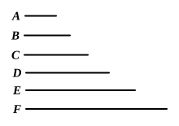
If as many numbers as we please beginning from an unit be in continued proportion, and the number after the unit be not square, neither will any other be square except the third from the unit and all those which leave out one. And, if the number after the unit be not cube, neither will any other be cube except the fourth from the unit and all those which leave out two.
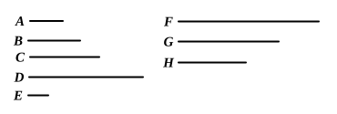
If as many numbers as we please beginning from an unit be in continued proportion, by however many prime numbers the last is measured, the next to the unit will also be measured by the same.
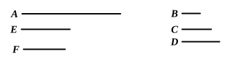
If a number be the least that is measured by prime numbers, it will not be measured by any other prime number except those originally measuring it.
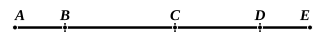
If as many odd numbers as we please be added together, and their multitude be even, the whole will be even.
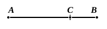
If from an even number an even number be subtracted, the remainder will be even.
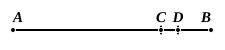
If from an even number an odd number be subtracted, the remainder will be odd.
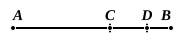
If from an odd number an odd number be subtracted, the remainder will be even.
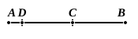
If from an odd number an even number be subtracted, the remainder will be odd.
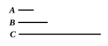
If an odd number by multiplying an even number make some number, the product will be even.
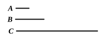
If an odd number by multiplying an odd number make some number, the product will be odd.
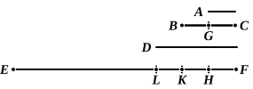
If as many numbers as we please be in continued proportion, and there be subtracted from the second and the last numbers equal to the first, then, as the excess of the second is to the first, so will the excess of the last be to all those before it.